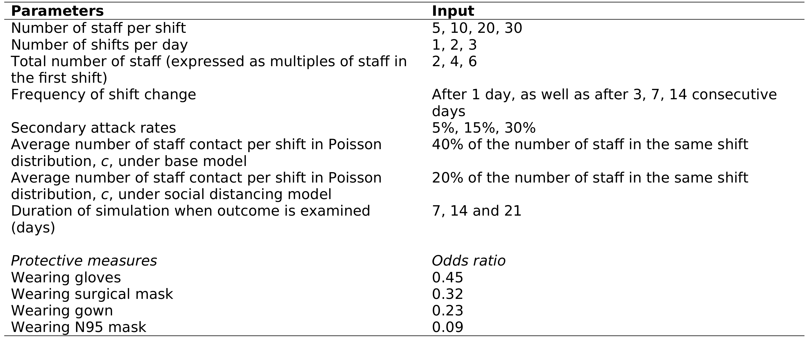

Finished reproduction and completed evaluation against guidelines. Total time used for reproduction: 12h 27m (31.1%). Time used for evaluation: 1h 30m.
09.03-09.27, 09.30-09.46: Figure 3
This used data I had already produced, and I could easily reuse my function from Figure 2 - just had to input the right parameters. Add letters to subplot to improve clarity.
Feel to be successfully reproduced at 09.46
import syssys.path.append('../')from timings import calculate_times# Minutes used prior to todayused_to_date =607# Times from todaytimes = [ ('09.03', '09.27'), ('09.30', '09.46')]calculate_times(used_to_date, times)
Time spent today: 40m, or 0h 40m
Total used to date: 647m, or 10h 47m
Time remaining: 1753m, or 29h 13m
Used 27.0% of 40 hours max
10.00-10.08: Figure 4
Again, could easily use prior data and functions, just filling in with all the right parameters.
Happy that this is successfully reproduced at 10.08.
import syssys.path.append('../')from timings import calculate_times# Minutes used prior to todayused_to_date =607# Times from todaytimes = [ ('09.03', '09.27'), ('09.30', '09.46'), ('10.00', '10.08')]calculate_times(used_to_date, times)
Time spent today: 48m, or 0h 48m
Total used to date: 655m, or 10h 55m
Time remaining: 1745m, or 29h 5m
Used 27.3% of 40 hours max
The protective measures have odds ratios provided in supplemental table 1. As described in section 2.4, these reflect the reduced probability of infection, and “the odds ratios [are] adopted for the reduction of p in the simulation”. Lim et al. (2020)
p is the secondary attack rate / probability of transmission between infected and susceptible staff. It is set at 15% (base), with scenarios of 5% and 30%.
The supplementary table lists odds ratios of:
Wearing gloves: 0.45
Wearing surgical mask: 0.32
Wearing gown: 0.23
Wearing N95 mask: 0.09
In supplemental table 6, it states that it is:
“Proportion of simulated laboratory staff infected by COVID-19 in base scenario with 15% probability of secondary infection at the end of day 14 of the simulation with the staff observing workplace social distancing (by reducing the contact rate by half) and using various personal protective equipment. In this scenario, the simulated staff worked fixed alternating workdays (i.e. fixed consecutive days on, and fixed minimum consecutive days off). The results shown are the median of 100 cycles of simulation. NA = not available as the number of staff per shift is too low to simulate under the required conditions.” Lim et al. (2020)
Hence, it appears we adjust p=0.15 by the odds ratios, to reduce the odds of transmission. It wasn’t immediately clear to me how to perform this calculation, although I quickly realised that it was likely to be multiplication, which results in the lowest odds for N95 (as we expect, with article results mentioning that “the strongest protective effect is seen with the N95 masks”).
As p/secondary_attack_rate is already a parameter in run_scenarios(), I could easily set up and run these scenarios.
This scenario is used in Figure 5 and Supplemental Table 6. Supplemental table 6 includes an additional scenario of workplace social distancing, which it states is achieved by reducing the contact rate (c) by half. In model.py (and as stated in section 2.5) this is used as follows:
c1 = 0.40*staffpershift1 # number of contact for shift 1
c2 = 0.40*staffpershift2 # number of contact for shift 2
c3 = 0.40*staffpershift3 # number of contact for shift 3
Hence, we can simply half 0.4 to use 0.2 instead. I set this up as a parameter that can be altered within run_scenarios() inputs. These was one section that also used 0.4, and I wasn’t sure whether I needed to change that also:
As it is not calculating the contact rate, I have assumed not for now.
Ran all these and compared against the supplementary table. Very similar, with minimal variation as would expect from stochasticity of model, and so I am happy to mark this as reproduced at 11.42.
import syssys.path.append('../')from timings import calculate_times# Minutes used prior to todayused_to_date =607# Times from todaytimes = [ ('09.03', '09.27'), ('09.30', '09.46'), ('10.00', '10.08'), ('10.19', '10.31'), ('10.44', '10.54'), ('11.19', '11.25'), ('11.35', '11.42')]calculate_times(used_to_date, times)
Time spent today: 83m, or 1h 23m
Total used to date: 690m, or 11h 30m
Time remaining: 1710m, or 28h 30m
Used 28.7% of 40 hours max
Reflections
So far, reproduction has been facilitated by:
Model simplicity
Simplicity of figures and similarity between figures
Some clear model parameters from article, tables and legends
Some parameters that we need to alter were already set up as function inputs that can be changed programmatically
Lots of comments in the code to aid understanding
Barriers:
Some slightly unclear scenarios (or that take a little longer to figure out)
No code for scenarios or figures or tables
Some parameters that we need to alter are hard coded
Run time
11.48-12.06, 12.09-12.15: Supplementary table 5
Supplementary table 5 has random roster assignment (which is used alongside table 6 to create figure 5).
This is only run with one shift per day.
It was initially unclear to be how to implement this scenario. I looked at the available description:
The random roster assignment is described in 2.1.3 as “Additionally, the scenario where the simulated staff are randomly assigned a new shift without fixed rest days are also examined in laboratories with a single shift.” This is as opposed to the alternating shift roster where “the staff was assumed to change shift after a single day (shift), as well as after working 3, 7, 14, 21 consecutive days. After each shift, the simulated staff is assumed to return and stay at home for at least the same number of days as the shift before being randomly assigned to a new shift with the other off-duty colleagues. For example, if a simulated staff works for 3 consecutive days, the staff will be off duty for at least the 3 following days.” Lim et al. (2020)
In the supplementary materials, the random roster assignment is described as working “without predefined minimum rest day (i.e. random shift assignment after each shift)” Lim et al. (2020)
Looking at model.py…
I can see that Lim et al. 2020 have commented above fillroster1() that this function is to full up the roster with staff, and that it ensures that the staff rest for a minimal period after working.
In the roster dataframe, the comments state that 0 = not resting and 1 = resting for the rest column.
The rest column is populated by fillroster1(). It samples from the staff in stafflist that are marked as not resting, sample the number of staff needed for that day. This is done as many times as needed for simulation (e.g. if shift changes every day (f=1), then the number of times will repeat is 21 (num_cycle=int(21/f))). When it does this, it marks a rest day with the line stafflist.loc[temp,'rest']=1. I’m assuming that conditionally removing that line may be how we implement the scenario
I add this to model.py.
As for other tables, results were very similar, and I was satisfied this was reproduced at 12.15.
import syssys.path.append('../')from timings import calculate_times# Minutes used prior to todayused_to_date =607# Times from todaytimes = [ ('09.03', '09.27'), ('09.30', '09.46'), ('10.00', '10.08'), ('10.19', '10.31'), ('10.44', '10.54'), ('11.19', '11.25'), ('11.35', '11.42'), ('11.48', '12.06'), ('12.09', '12.15')]calculate_times(used_to_date, times)
Time spent today: 107m, or 1h 47m
Total used to date: 714m, or 11h 54m
Time remaining: 1686m, or 28h 6m
Used 29.8% of 40 hours max
12.16-12.20: Removed mistake in scope
In heinsight, I realised we had made a mistake with the scope, as we had set in-text result 1 as:
“The strongest protective effect is seen with the N95 masks (nearly equivalent to a FFP2 mask), which has the effect of reducing the odds of transmission by 0.09” Lim et al. (2020)
However, I realised that this is not a result of the model, but instead just stating the odds ratio used to alter the probability of secondary transmission, as presented in supplementary table 1.

As such, I removed this from the scope.
12.21-12.50: Figure 5
For Figure 5, I could use the data and functions already produced.
It wasn’t immediately clear what some of the parameters (strength and staff_per_shift).
I had this for staff_change since the first figure, and in that case used 1 based on this appearing to be the default value from the description. However, it was not possible to take the same approach for these, as none was marked as more clearly a default.
I then noticed that section 3.2 mentions that it is “a single shift per day, an overall staff pool of twice the number of staff per shift and has fixed alternating workday”. Lim et al. (2020). Hence, it seems it uses strength=2.
I decided to try staff_per_shift=20 based on the prior Figure 4, as that had used that as its default value across the subplots. However, I felt it looked a little different, so I tried with 10, 20 and 30 respectively (as below).
I felt that the results were more similar when plot with 30 staff per shift. Given that I hadn’t found any note anywhere of what parameter was used for this figure, I decided to switch to that.
At this point, I am satisifed that the variation between the original and reproduction is within the expected variation from the stochasticity of the model, and so consider reproduced at 12.50.
import syssys.path.append('../')from timings import calculate_times# Minutes used prior to todayused_to_date =607# Times from todaytimes = [ ('09.03', '09.27'), ('09.30', '09.46'), ('10.00', '10.08'), ('10.19', '10.31'), ('10.44', '10.54'), ('11.19', '11.25'), ('11.35', '11.42'), ('11.48', '12.06'), ('12.09', '12.15'), ('12.16', '12.20'), ('12.21', '12.50')]calculate_times(used_to_date, times)
Time spent today: 140m, or 2h 20m
Total used to date: 747m, or 12h 27m
Time remaining: 1653m, or 27h 33m
Used 31.1% of 40 hours max
Untimed: Displaying the tables on reproduction success page
Due to size of tables, created function to preview and show differences in the tables, rather than just sharing the whole tables, as I normally would.
Timings for reproduction
import syssys.path.append('../')from timings import calculate_times# Minutes used prior to todayused_to_date =607# Times from todaytimes = [ ('09.03', '09.27'), ('09.30', '09.46'), ('10.00', '10.08'), ('10.19', '10.31'), ('10.44', '10.54'), ('11.19', '11.25'), ('11.35', '11.42'), ('11.48', '12.06'), ('12.09', '12.15'), ('12.16', '12.20'), ('12.21', '12.50')]calculate_times(used_to_date, times)
Time spent today: 140m, or 2h 20m
Total used to date: 747m, or 12h 27m
Time remaining: 1653m, or 27h 33m
Used 31.1% of 40 hours max
13.57-14.03: STARS framework
14.07-14.16: Journal badges
complete: marked as no as I had to write code for scenarios, figures and tables
structure: uncertain, tentatively marked as unmet, as I feel what was provided was well structured (with comments akin to docstrings at the start of functions, lots of comments throughout the script), although I am uncertain as I also had to make several changes in order to more easily use it (as some of the parameters were hard-coded in the for loop or functions, etc.)
documentation_sufficient: it meets that documentation is sufficient to “understand how it works, to enable it to be run”, but not “including package versions”, and so marked as unmet
14.17-15.05: STRESS-DES
2.5.3 Components - resources and 2.5.4 Components - queues - uncertain, want to double check whether I am correct in marking as N/A.
16.06-16.26: Checklist derived from ISPOR-SDM
6 Is the target population described? - uncertain, set as N/A, but could you argue fully met, given the context and what would be relevant to describe about the target population? Or is this wanting numbers of laboratories and so on? Partially? Not met? Very unsure!
12 Is cross validation performed and reported - In previous studies, if they have mentioned that it was not possible to compare due to there not being other relevant studies, I’ve set as N/A. However, they do not mention this. Also, they state that estimates on protective effectives of PPE for severe acute respiratory syndrome (SARS) “should be broadly applicable to the current COVID-19 situation”, so it’s assumed that there could be models in that context, and as not described as being a lack of models in this paper, could reasonably assume that there could be relevant models available that were not identified and used for cross validation.
16.40-16.47: Wrote email to Tom and Alison sharing uncertainities from evaluation
import syssys.path.append('../')from timings import calculate_times# Minutes used prior to todayused_to_date =0# Times from todaytimes = [ ('13.57', '14.03'), ('14.07', '14.16'), ('14.17', '15.05'), ('16.06', '16.26'), ('16.40', '16.47')]calculate_times(used_to_date, times, limit=False)
Time spent today: 90m, or 1h 30m
Total used to date: 90m, or 1h 30m
References
Lim, Chun Yee, Mary Kathryn Bohn, Giuseppe Lippi, Maurizio Ferrari, Tze Ping Loh, Kwok-Yung Yuen, Khosrow Adeli, and Andrea Rita Horvath. 2020. “Staff Rostering, Split Team Arrangement, Social Distancing (Physical Distancing) and Use of Personal Protective Equipment to Minimize Risk of Workplace Transmission During the COVID-19 Pandemic: A Simulation Study.”Clinical Biochemistry 86 (December): 15–22. https://doi.org/10.1016/j.clinbiochem.2020.09.003.